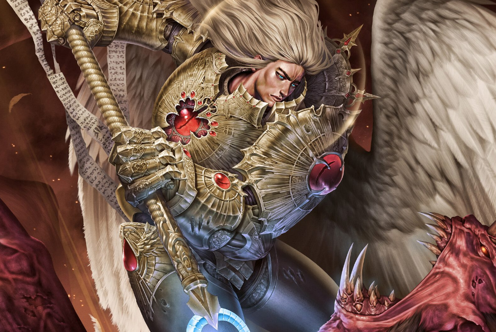

Dossier Primarque IXe Légion
Sanguinius fut le Primarque des Blood Angels. Parmi les fils de l’Empereur, peu inspirèrent autant d’admiration, de loyauté et de douleur.
Retrouvé sur Baal, monde irradié et impitoyable, il porta dès son apparition une anomalie visible : des ailes blanches, immenses, impossibles à ignorer.

Là où beaucoup auraient vu une mutation à condamner, les habitants de Baal virent un ange. Et peut-être avaient-ils raison.
Sanguinius transforma la IXe Légion. Il donna à ses fils une noblesse, une discipline et une beauté que leur violence originelle ne possédait pas encore.
Mais sa grandeur portait déjà une ombre. Sanguinius voyait parfois l’avenir. Il savait que sa mort l’attendait. Il savait qu’elle viendrait dans le sang, face à Horus.
Durant l’Hérésie, il resta loyal. Non par naïveté, mais par devoir. Il marcha vers Terra en sachant que son destin l’y attendait.
Lors du siège de Terra, il affronta les horreurs du Chaos, défendit la Porte de l’Éternité, puis monta à bord du vaisseau d’Horus pour son dernier combat.
Il fut tué par Horus.
Sa mort devint une blessure héréditaire. Dans le sang de ses fils, son dernier instant continue de hurler.
La Rage Noire n’est pas seulement une malédiction. C’est une mémoire. Le souvenir impossible d’un père massacré par son frère.
Il faut comprendre ceci. Sanguinius n’est pas seulement vénéré parce qu’il fut beau, noble ou puissant.
Il est vénéré parce qu’il marcha volontairement vers une mort qu’il avait vue venir.
Fin de l’extrait. Toute référence au sacrifice de Sanguinius doit être traitée comme élément doctrinal majeur du Chapitre.